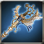

Chain of Purification
Worn by mon_BertheRare
Great Saintess Rod containing concentrated holy power of Armonia Cathedral. [Made for Monsters costume]
Attributes
Rating: 38
ATK: 335
Fire PEN: 10
Ice PEN: 10
Light.PEN: 10
Mental PEN: 10
Phys.PEN: 10
LifeLess ATK: 25
UnDead ATK: 25
WildLife ATK: 25
Human ATK: 25
Demon ATK: 25
ATK: 335
Fire PEN: 10
Ice PEN: 10
Light.PEN: 10
Mental PEN: 10
Phys.PEN: 10
LifeLess ATK: 25
UnDead ATK: 25
WildLife ATK: 25
Human ATK: 25
Demon ATK: 25
 Rough green jewel x1
Rough green jewel x1 Mana stone x4
Mana stone x4 Talt x66
Talt x66 Iron Piece x66
Iron Piece x66 Fool Stone x1
Fool Stone x1 Emerald piece x1
Emerald piece x1 Juniper x12
Juniper x12 Quartz x66
Quartz x66 Aidanium x66
Aidanium x66 Ionium x66
Ionium x66 Chalcedony x66
Chalcedony x66 Emerald x1
Emerald x1 Silver Piece x66
Silver Piece x66
 Royal Emerald x1
Royal Emerald x1 Aquamarine x25
Aquamarine x25

 inspire a soul into Steel Piece x1
inspire a soul into Steel Piece x1 Sapphire x1
Sapphire x1 Magic ball x10
Magic ball x10 Enchantchip Lv 92 x2
Enchantchip Lv 92 x2 Magic Weapon Crystal - Lv 35 x2
Magic Weapon Crystal - Lv 35 x2 Star Stone x50
Star Stone x50 kryptonite x200
kryptonite x200 Elemental Jewel x10
Elemental Jewel x10 Symbol of Naraka x100
Symbol of Naraka x100 Enchantchip Expert x50
Enchantchip Expert x50 Forest Spirit x30
Forest Spirit x30 liquid of Heaven x3
liquid of Heaven x3 Drop of Sky x10
Drop of Sky x10 Pure Otite x30
Pure Otite x30 Shiny Crystal x300
Shiny Crystal x300 Dragon Heart x1
Dragon Heart x1 Snail shell x30
Snail shell x30
 Moon Stone x3
Moon Stone x3 a lump of Platinum x1
a lump of Platinum x1 Wheel of Time x100
Wheel of Time x100
 Ancient Rune - Ti x50
Ancient Rune - Ti x50 Piece of Defrodain x1
Piece of Defrodain x1 Symbol of Darkness x5
Symbol of Darkness x5 Armonias Holywater x10
Armonias Holywater x10 Sauterelles piece of Clothe x50
Sauterelles piece of Clothe x50 Devils Dream x100
Devils Dream x100 Pure Essence x1000
Pure Essence x1000 Fallen Essence x1000
Fallen Essence x1000 Balance Essence x1000
Balance Essence x1000 Warped weapon debris x1500
Warped weapon debris x1500 Symbol of HolyKnight x100
Symbol of HolyKnight x100 Symbol of HolyPriest x100
Symbol of HolyPriest x100 Armonium Ore - Blue x20
Armonium Ore - Blue x20 Armonia Token x200
Armonia Token x200 Symbol of Patrikyon x200
Symbol of Patrikyon x200 Black Insignia of Evora x100
Black Insignia of Evora x100 Shiny Sollarion x300
Shiny Sollarion x300 TimePiece : Rose x500
TimePiece : Rose x500 Vertrauen Symbol x1
Vertrauen Symbol x1 Star Essence x50
Star Essence x50 Armonium Ore - Black x10000
Armonium Ore - Black x10000